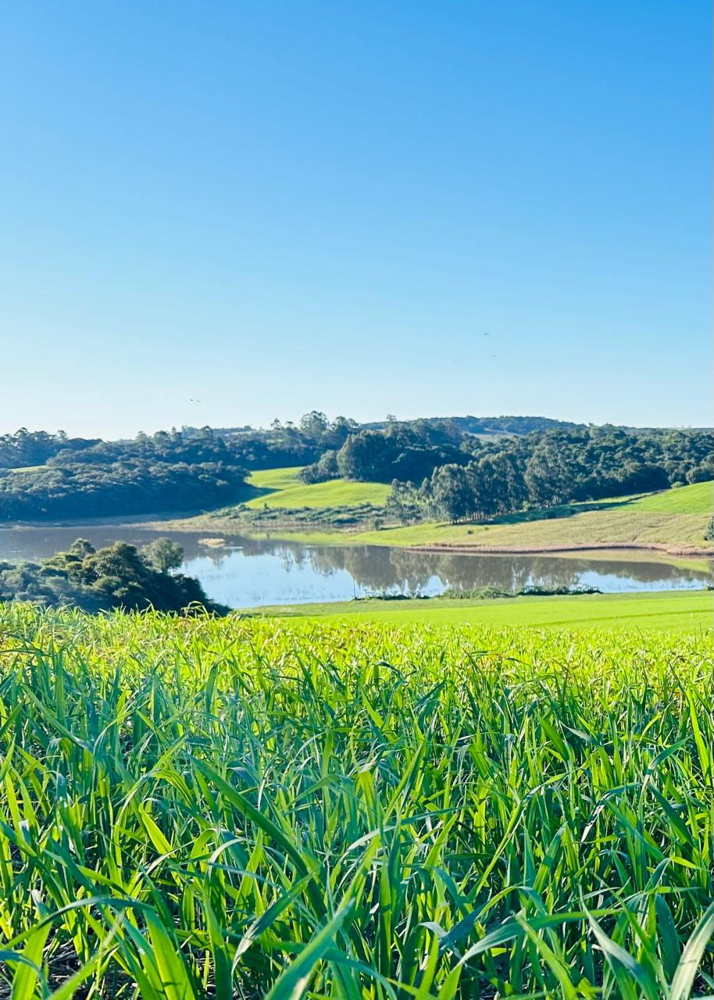
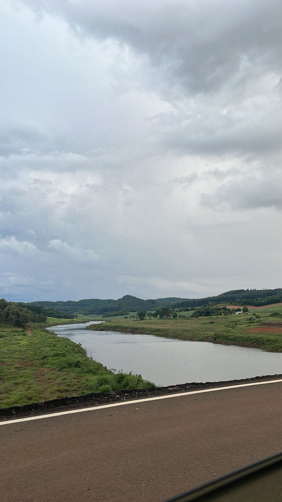

O Rio Chupim: Uma água que não faz nada de mais em Clevelândia, mas ainda assim tem sua importância na vida da comunidade, na cultura local, na história da região e na identidade dos moradores, servindo como um símbolo de conexão com as raízes, um espaço de convívio e um elemento que, apesar de sua simplicidade, carrega significados e valores que enriquecem a vida dos que vivem ao seu redor
O Rio Chupim, localizado na cidade de Clevelândia, é uma formação natural que, embora não seja conhecido por grandes fenômenos ou por sua grandiosidade, possui um papel importante na vida da comunidade local. Muitas vezes, ele passa despercebido por quem não conhece sua história ou sua presença cotidiana, mas para os moradores, o rio representa muito mais do que uma simples corrente de água. Ele faz parte do cenário, do cotidiano e da identidade de Clevelândia, servindo como um espaço de convivência, lazer e conexão com as raízes da região.
Apesar de não ser uma fonte de grande riqueza natural ou de causar grandes impactos ambientais, o Rio Chupim carrega consigo uma história que remonta às origens da cidade e às tradições dos seus habitantes. Para muitos, ele é um símbolo de simplicidade, resistência e continuidade, testemunha silenciosa das mudanças e do desenvolvimento ao longo dos anos. Além disso, o rio também desempenha um papel importante na cultura local, sendo palco de pequenas festas, encontros e momentos de reflexão para quem aprecia a sua presença.
-Apesar de ser um rio de pequeno porte, o Rio Chupim é muito importante para a comunidade local, pois serve como espaço de convivência e lazer para os moradores de Clevelandia.
-O nome "Chupim" tem raízes nas tradições e na história da região, embora sua origem exata seja cercada de lendas e histórias populares.
-Como muitos rios, provavelmente desempenha um papel importante na biodiversidade local, fornecendo habitat para diversas espécies de peixes e plantas.
O Rio Chupim em Clevelandia é uma joia da natureza que desempenha um papel vital na vida da comunidade e na preservação do meio ambiente local. Sua importância vai além de fornecer água, pois também sustenta a biodiversidade e ajuda a manter o equilíbrio ecológico da região. Para garantir que ele continue sendo um recurso valioso para as futuras gerações, é fundamental que todos se envolvam na sua preservação e cuidado. Assim, podemos aproveitar os benefícios desse lindo rio por muitos anos!